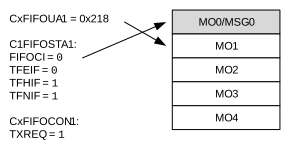
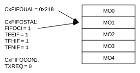
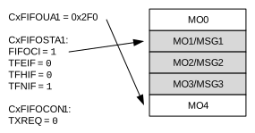
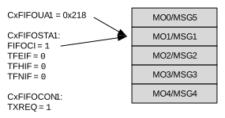

FIFO 1 is configured as a TX FIFO. CxFIFOCON1 is used to control the FIFO. CxFIFOSTA1 contains the status flags and the FIFO Index bits (FIFOCI[4:0]). CxFIFOUA1 contains the user address of the next transmit message object to be loaded.
Figure 38-18 through Figure 38-23 illustrate how the status flags, user address and FIFO index are updated for FIFO 1.
Figure 38-18 shows the status of FIFO 1 after Reset. Message objects, MO0 to MO4, are empty. All status flags are set. The user address and the FIFO index point to MO0.
Figure 38-19 illustrates the status of FIFO 1 after the first message (MSG0) is loaded. MO0 now contains MSG0. The user application sets the UINC bit (CxFIFOCON1[8]), which causes the FIFO head to advance. The user address now points to MO1. TFEIF is cleared since the FIFO is no longer empty. The user application now sets TXREQ to request the transmission of MSG0.

Figure 38-20 illustrates the status of FIFO 1 after MSG0 is transmitted. The FIFO is empty again. TFEIF is set and TXREQ is cleared. FIFOCIx bits now point to MO1 with user address 0x218.

Figure 38-21 illustrates the status of FIFO 1 after three more messages are loaded: MSG1-MSG3. The user address now points to MO4. TFHIF is cleared because the FIFO is now less than half empty.

Figure 38-22 illustrates the status of FIFO 1 after two more messages are loaded: MSG4 and MSG5. CxFIFOUA1 now points to MO1. All status flags are now cleared because the FIFO is full. The user address and the FIFO index now point to MO1. The user application now sets TXREQ to request the transmission of MSG1-MSG5.

Figure 38-23 illustrates the status of FIFO 1 after MSG1-MSG5 are transmitted. The FIFO is empty again. All status flags are set and TXREQ is cleared. The user address and the FIFO index point to MO1 again.